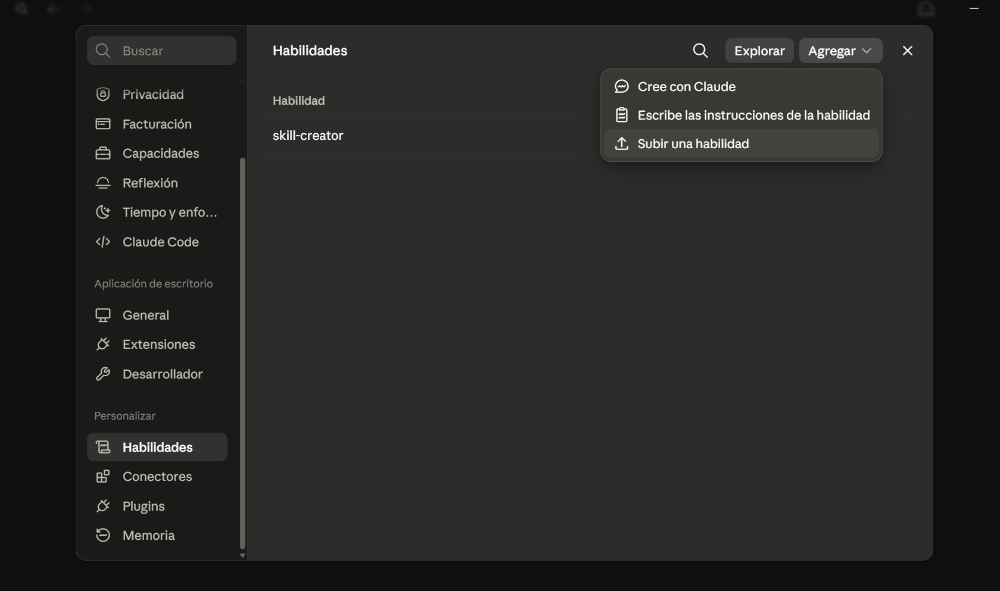
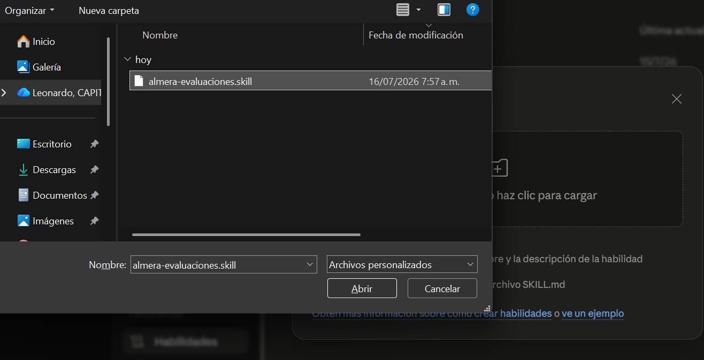
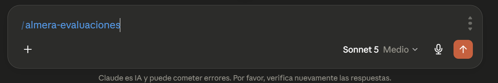
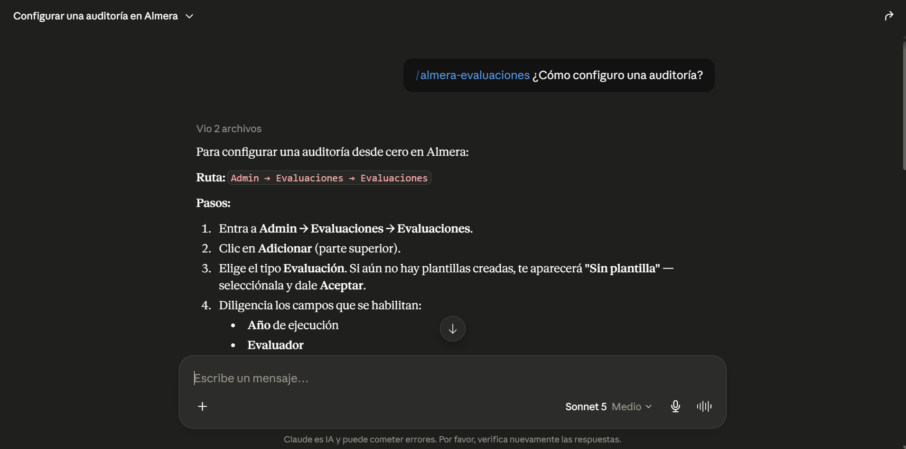

Qué son los archivos .skill y .md
Cada módulo documentado (Evaluaciones, Gestión documental, Indicadores, Mecanismos de integración, Planes de mejora) tiene su conocimiento empaquetado en dos formatos distintos, pensados para dos formas diferentes de usar IA.
.skill — Habilidad para Claude
Un paquete listo para instalar como Agent Skill. Una vez activado, Claude lo carga automáticamente cuando la conversación lo necesita — no hay que adjuntar nada manualmente en cada chat.
.md — Documento de referencia
Un archivo de texto plano con toda la guía del módulo. Sirve para cualquier asistente de IA (ChatGPT, Gemini, Copilot, o el propio Claude), pero hay que adjuntarlo o pegarlo manualmente en cada conversación donde se quiera usar.
Si usa Claude, el archivo .skill es la opción más cómoda. Si usa otro asistente, o quiere una alternativa más simple, use el archivo .md.
Instalar un archivo .skill en Claude
Pasos para subir la habilidad de un módulo a Claude (Claude.ai o Claude Desktop). Solo se instala una vez por módulo; después queda disponible en todas las conversaciones nuevas.
- 01Descargar el archivoVaya a la sección Módulos disponibles de esta página y descargue el archivo .skill del módulo que le interesa.
- 02Abrir configuraciónEn Claude, abra Configuración y entre a la sección de Habilidades.

- 03Subir la habilidadHaga clic en Subir habilidad (o Upload skill) y seleccione el archivo .skill descargado en el paso 1.



- 04Confirmar instalaciónClaude procesa el archivo y muestra la habilidad en la lista, con su nombre y una breve descripción. Verifique que aparezca activada.

Las habilidades .skill solo se pueden instalar en Claude. Para usar la documentación con otro asistente de IA, use el archivo .md del mismo módulo (ver sección 4).
Usar la habilidad instalada
Una vez instalada, la habilidad queda disponible para cualquier conversación nueva sin necesidad de volver a subir el archivo.
- 01Nueva conversaciónAbra un chat nuevo en Claude.
- 02Verificar activaciónConfirme que la habilidad del módulo esté activada para esa conversación (algunas cuentas permiten activar o desactivar habilidades por chat).


- 03PreguntarHaga una pregunta relacionada con el módulo, en lenguaje natural.EjemploPregunta«¿Cómo configuro una auditoría?»

- 04Revisar la respuestaClaude debe responder con base en los pasos documentados del módulo, no con información inventada. Si la respuesta parece genérica, verifique que la habilidad esté activa.
La habilidad no reemplaza el juicio del usuario: para procedimientos críticos, siga confirmando contra la guía escrita del módulo.
Usar los archivos .md con otros agentes
Este método funciona con cualquier asistente de IA — ChatGPT, Gemini, Copilot, o el propio Claude sin instalar la habilidad — porque el archivo es texto plano.
- 01Descargar el archivoVaya a Módulos disponibles y descargue el archivo .md del módulo que le interesa.
- 02Abrir el agente de IAAbra el asistente que vaya a usar (ChatGPT, Gemini, Copilot, Claude, etc.).
- 03Adjuntar como contextoSi el agente permite adjuntar archivos, suba el .md directamente en la conversación.Si no permite adjuntar archivos, abra el .md con un editor de texto y pegue su contenido completo al inicio del chat.

- 04Indicar el usoPida explícitamente que use ese documento como referencia para responder.EjemploInstrucción sugerida«Usa este documento como referencia para responder mis preguntas sobre el módulo.»

- 05PreguntarHaga sus preguntas sobre el módulo dentro de esa misma conversación.

Este ejemplo fue tomado con Copilot, pero el procedimiento es similar en cualquier asistente de IA.
Recomendación: use este método cuando no trabaje con Claude, o cuando quiera una opción rápida sin instalar nada. Recuerde que este procedimiento sirve con cualquier asistente de IA.
Módulos disponibles
Descargue el archivo que necesite. Los enlaces apuntan directamente al archivo real de cada módulo.
El módulo Planes de mejora todavía no tiene habilidad .skill empaquetada para Claude — por ahora solo está disponible su archivo .md.
Buenas prácticas
Mantenga la habilidad actualizada. Si la documentación de un módulo cambia, vuelva a descargar el archivo .skill o .md más reciente y reemplace el que tenga instalado o adjunto.
El archivo .skill incluye varios documentos de referencia internos que Claude consulta automáticamente según la pregunta. El archivo .md es un solo documento completo — más simple, pero sin esa carga selectiva.
Si tiene dudas sobre si la respuesta de la IA es correcta, siempre puede volver a la guía escrita del módulo en esta misma documentación.